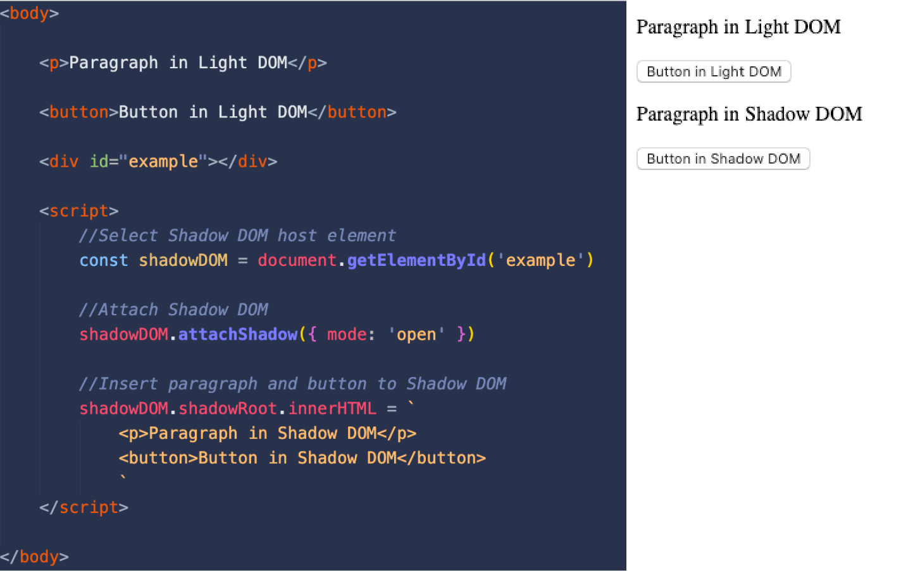
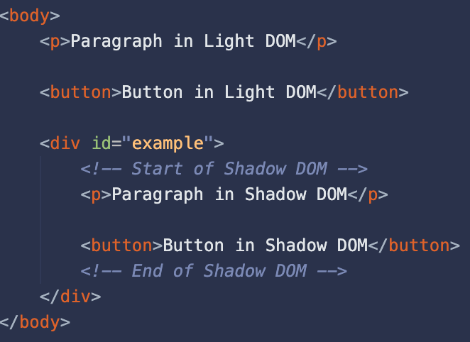

What are Web Components?
Using multiple web API's and technologies you can create create custom, reusable, encapsulated HTML tags, these are called web components (WC). If you are familiar with HTML you know the language consists of tags. All tags have their own uses, behaviour and can differ in basic styling.
All the relied upon API's and technologies can also be used individually, they all have their own unique use-cases.
In HTML you can also create your own tags by wrapping it in tags, for example; <test> or <example>. These 'custom' elements all function the same because undewater they are actually span tags/elements.
<example> is more like a semi-custom element; it has it's own tag but behaves and looks like a <span> element. Custom Elements are defined in JS and can then be used in HTML.
Web Components allows us to create custom elements and assign styling and behaviour. This way your custom elements have a basic styling and behaviour without stylesheets or scripts.
Drawing a comparison from Web Components to HTML
WC are essentially custom defined HTMl tags which come with their own standard styling and behaviour. This basic styling is defined in the code where the WC is created.
You could look at standard HTMl tags as custom elements defined by the W3C.
Take the <h2> element for example. Without applying custom CSS rules or scripting it's: black, bold, has a custom font-size and custom margin.
The <video> element also has custom attributes such as: autoplay, controls, loop, muted, poster and preload. What these attributes do, how they work etcetera is all defined somewhere but it's not accessible for us developers (we can only overwrite it if necessary).
Advantages of Web Components
- WC can be reused as much as you want to, you only have to define them once.
- WC code/logic is encapsulated, it uses a private scope which means it isn't accessible in the global scope/DOM.
- WC only require basic HTML, CSS and JS. It's future proof and compatible with frameworks.
- Code and logic is contained in one area. Apps are compartmentalized into smaller chunks instead of one big file.
- Custom elements allow for custom tag names, which makes it easier to read HTML and determine which element does what:
WC also improve the maintenance and readability of your code;
<div id="image-carousel"></div> //Standard HTML
//Is better readable as:
<image-carousel></image-carousel> //Custom Element
The Web Component building blocks
As mentioned before, WC rely on a few web API's and technologies. All these API's and technologies can be used on their (and have their own use-cases) own but when used together they create web components.
Custom Elements
Custom Elements are HTML tags defined by you. You can name them, give them custom markup, styling and scripts.
Custom Elements
to create a basic custom element you need atleast HTML and JS.
In the HTML you need to insert your custom element.
NOTE: all custom elements need to contain a dash (-) in their name. This is for the parser to indicate it's a custom element. To ensure backwards compatability browser vendors have agreed to not use dashes in new HMTL tags.
<user-card></user-card>
This however won't render anything. If you insert text in the <user-card> element it'll show the text but really it'll act as a <span> element. This is because the element is not a defined HTML tag and thus unknown to the parser, all unknown tags inherit the properties of a <span> element.
To prevent our custom element from being rendered as a <span> element we have to define it in JS. This way the parser will find a definition of the tag and render it with the associated styling.
The above image shows how to define a custom element in JS
Since the custom element is defined in the CustomElements list the parser knows that <user-card></user-card> should render "Wessel Smit" as defined in the associated UserCard class.
The above code is a simple demonstration, you can ofcourse do way more such as applying styling, adding addEventListeners etc.
Shadow DOM
The Shadow DOM is an encapsulated version of the DOM. This means it's cut off from the normal DOM (also called the light DOM).
The Shadow DOM functions as a sub-DOM tree to the light DOM, it's used to encapsulate markup, styles and logic meaning it's used to create self-contained DOM fragments.
Using Shadow DOM
The following images will demonstrate how to use Shadow DOM, the left side is the code and the right side is a preview of what's being rendered.

The code above renders a simple paragraph and button, it only uses the Light DOM
The code above renders a paragraph and button in both the Shadow and Light DOM
The light DOM structure now contains the Shadow DOM fragment, the Light DOM now looks like this:
Shadow DOM use case
As mentioned before, the Shadow DOM is used to encapsulate markup, styles and logic. The advantage of encapsulation is that after defining the markup, styles and logic they can't be affected outside of the Shadow DOM.
Now that we have some HTML in both DOMs, We apply the following CSS;
The above CSS should make all paragraph and button text red.
In the rendered page only the content from the Light DOM is red. This is because the content from the Shadow DOM isn't accessible for the Light DOM.
As you can see only the content from the Light DOM is red.
The content is accessible through JS, but you have to specifically select the ShadowRoot first.
const p = document.querySelector('p:nth-of-type(2)') //Select the 2nd paragraph element
console.log(p)//Returns: null
This is because JS doesn't have access to the ShadowRoot, to access the paragraph in the ShadowRoot you can't use document. Document is Light DOM only and returns errors in the Shadow DOM. To select elements inside the Shadow DOM you have to replace document with the element hosting the ShadowRoot. (In our case this is the ShadowDOM constant)